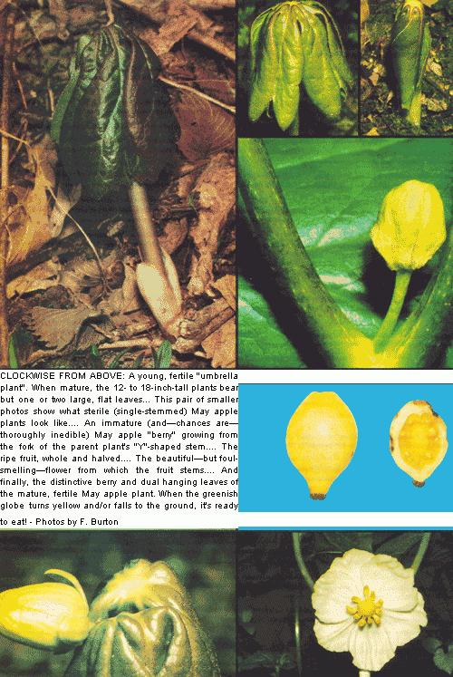

If you've been looking for something really different to spice up your daily menu-a unique fruit, say, with an indescribably exotic flavor that conjures up visions of sunny tropical isles-chances are you won't have to look much further than your own back yard.
Because the mighty May apple bears just such a treat. And if you live anywhere in the eastern half of the United States between Quebec and Florida, you shouldn't have any trouble finding enough of the fruit to make loads of succulent preserves and a gallon or two of the most delicious summer punch this side of the Garden of Eden!
Fortunately for all of us, the May apple (known among scientific circles as Podophyllum peltatum ) is one of the simplest to identify of all forest forageables. The species is sometimes called "umbrella plant" or "duck's foot" . . . and it's easy to see why. The mature plant, which bears one or two large (often a foot across) flat leaves centrally attached to either a single or "Y"-branched stem, by gosh, looks like a miniature umbrella. And because its expansive foliage is deeply cleft, some naturalists (the more imaginative ones, anyway) think it resembles-yep, you guessed it-a duck's foot. Take a look at the accompanying photos and draw your own conclusions.
The best places to look for May apple plants are moist, open woods and the edges of boggy meadows. Keep your eyes open for a cluster of greenery, rather than lone specimens. Podophyllum peltatum grows from a single underground rhizoid stem which-in very early spring-sends up dozens of finger-shaped shoots sporting young leaves tightly furled around a central stalk. Within a matter of just a few weeks, huge rambling colonies of full-blown specimens twelve to eighteen inches tall blanket entire patches of ground, completely shading (and in effect mulching) the earth from which they've sprung.
Interestingly enough, only the dual-leaved "Y"-branched members of the community bear flowers and fruit. In midspring, a single large (two inches in diameter) white blossom with six to nine petals appears at the fork of each "Y"-plant's stem, nodding inconspicuously beneath its own personal "umbrella". The bloom is a true forest beauty . . . although the odor it exudes is downright nasty.
Then, in June or early July (depending on the climate where you live), the attractive blossom gives way to a smooth, fleshy "berry" the size and shape of a small lemon. The little globe is at first green, but-within a matter of weeks-ripens to a distinct yellow. Strangely enough, the plant's foliage dies off at about the same time . . . so that, come apple-hunting season (mid-July or August) often only the dry, bare stems and the fruit remain. (Which, incidentally, is why it's a good idea to "scout out" and actually map May apple patches in the early spring, when the distinctive green leaves make positive identification easy. Then you can simply return in midsummer and harvest the goodies with no fear of getting-shudder-The Wrong Thing by mistake.)
Once you do strike off into the woods with empty collecting bags in hand-and visions of sweet punch and preserves in your head-remember that the luscious, fragrant, ambrosial May apple fruit ain't luscious, fragrant, or ambrosial until it is dead ripe. The skin should be clear yellow (with no green showing) : . . the pulp should be translucent and have a jellylike texture . . . and the berry itself should be just about ready to fall to the ground. Some folks (of the "persimmon" school of foraging), in fact, won't collect the fruit at all unless it has dropped to earth as evidence that it's ready to be eaten.
What does a fully mature May apple fruit taste like? Well, to be honest, I can't really give you an adequate description. All I can say is that the sweet, mildly acid flavor has been likened to that of papayas, and strawberries, and cantaloupes . . . but none of those comparisons really does the job. You'll just have to find out for yourself.
Be careful, though: When it comes to eating these little rascals, overindulgence is far too easy . . . and the consequences are all too similar to the gastrointestinal furor that comes from consuming too many green apples.
At any rate, I can tell you for sure that the fruit of the May apple tastes good (to say the least). Chances are, once you've sampled one or two of the elusively flavored berries in the field, you'll want to gather up as many as you can to take home. And in that case, I suspect you might want to try my two favorite May apple recipes (enjoy, enjoy!):
Using a juicer or food mill, crush (and strain the seeds from) enough raw fruit to make one ounce of juice. Combine the liquid with seven ounces of fresh lemonade, stir, and pour into glasses filled with ice.
Simmertwo quarts of May apples (with stems and blossom ends removed) in one cup of water until the fruit is soft. Then pour the mass directly into a colander and press the pulp through into a container, leaving the skins and seeds behind. Add one box of Sure-Jell for every four cups of cooked fruit, and bring the mixture to a boil. Finally, add fiive cups of sugar, bring to a hard boil, and-after one minute-pour the finished preserves into sterile jars and seal with paraffin or canning lids.
(If you choose to use low-methoxyl pectin for this recipe instead of Sure-Jell, you can substitute approximately 2-1/2 to 3 cups of honey for the sugar . . . or the spread simply can be jelled without additional sweetener. Remember, though, that preserves made in this way must be "put up" in sterile jars with conventional canning lids. A simple paraffin seal is not adequate to prevent bacterial growth in low-sugar foods.)
Down through the years the May apple ( Podophyllum peltatum ) has had many common names, including wild jalap, hog apple, ground lemon, Indian apple, raccoon berry, and American mandrake. The plant sometimes received that last name not because it is in any way directly related to the European mandrake ( Podophyllum peltatum is a member of the barberry family while Mandragora officinarum, the European mandrake, belongs-like the potato, the tomato, and belladonna-to the nightshade family) . . . but because podophyllin-a bitter, resinous extract taken from the roots, leaves, and stems of the May apple-does have medicinal powers that somewhat resemble those of the European mandrake.
The medicinal dosage of podophyllin is very small and overdoses can kill . . . so do not eat the roots or foliage of the May apple (just as you should never eat the sprouts of the potato).
The Penobscot Indians used the crushed roots of the May apple as a poultice for the removal of warts and the Menominee tribe considered the stems and foliage of the plant to be a good pesticide. They boiled those parts of the May apple In water and then applied the cooled liquid to their potato patches to repel the insects that attacked them.-FB.
|
 |
|
|